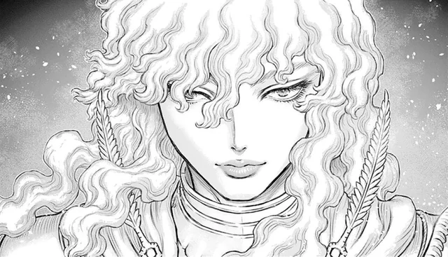

Berserk: Una Obra Mestra del Manga
Introducció al Manga
Berserk és un manga japonès creat per Kentaro Miura, que va començar la seva serialització el 1989. La sèrie és coneguda per la seva narració fosca, temes madurs i detalls artístics impressionants. Amb més de 40 volums publicats fins a la data, Berserk s'ha convertit en una obra de culte i ha influenciat profundament altres obres dins del gènere de la fantasia fosca.
El Creador: Kentaro Miura
Kentaro Miura va néixer el 1966 i va demostrar un talent precoç per al dibuix. Abans de crear Berserk, Miura va treballar en diverses històries curtes i projectes menors. La seva habilitat per crear detalls intricats i escenes visuals impactants es va fer evident en les seves primeres obres. Berserk, però, va ser la seva obra mestra, on va poder combinar la seva passió per la mitologia, la història medieval i les narratives complexes.

Trama i Personatges Principals
Berserk segueix la història de Guts, un mercenari solitari amb una força sobrehumana, i Griffith, el carismàtic líder de la Banda del Falcó. La relació entre Guts i Griffith és el cor de la història, plena de traïcions, ambicions i lluites internes.
Guts
És el protagonista de la sèrie. Des de petit, Guts ha lluitat per sobreviure en un món cruel, desenvolupant una habilitat extraordinària en el combat. La seva vida canvia radicalment quan coneix Griffith i s'uneix a la Banda del Falcó.
Griffith
Ambicions i carisma defineixen aquest personatge. Griffith somia amb el seu propi regne i no dubtarà a fer qualsevol cosa per aconseguir-lo. La seva relació amb Guts és complexa, plena d'admiració i rivalitat.
Casca
És una membre clau de la Banda del Falcó i un dels personatges femenins més importants de la sèrie. La seva força i determinació la converteixen en una lluitadora formidable, i la seva relació amb Guts i Griffith afegeix una profunditat emocional a la història.
Temes i Estil Artístic
Berserk és conegut per la seva exploració de temes com la lluita pel poder, la redempció, la traïció i la naturalesa de l'home. El món de Berserk és brut i implacable, ple de criatures demoníaques, màgia fosca i conflictes morals. L'art de Miura destaca per la seva complexitat i detall. Les escenes de batalla són especialment notables per la seva dinàmica i brutalitat, mentre que els moments més tranquils revelen una profunditat emocional sorprenent.
Adaptacions
L'èxit de Berserk ha portat a diverses adaptacions en diferents formats:
Anime (1997)
La primera adaptació animada cobreix l'Arc de la Edat d'Or. Tot i les limitacions tècniques de l'època, l'anime va capturar l'essència de la història i va introduir molts espectadors a l'univers de Berserk.
Trilogia de Pel·lícules (2012-2013)
Aquesta adaptació cinematogràfica també cobreix l'Arc de la Edat d'Or, amb millores significatives en animació i efectes visuals. Les pel·lícules van ser ben rebudes, però alguns fans van lamentar la falta de certs detalls presents en el manga.
Anime (2016-2017)
Aquesta sèrie va continuar la història més enllà de la Edat d'Or, però va rebre crítiques per l'ús d'animació CGI, que molts van trobar inferior en comparació amb l'art detallat del manga original.